Saint-Pétersbourg insolite
Lieux méconnus, cours intérieures, musées étranges et archives photographiques de Saint-Pétersbourg.
-
#1
 #1
#1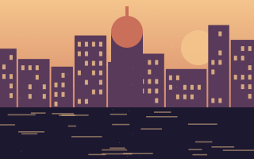
Le Musée de l’eau (tour du Vodokanal) et ses galeries souterrainesAncienne tour d’eau de 1863 transformée en musée immersif.
À qualifier -
#2
 #2Image
#2Image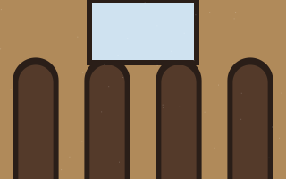
Cour-puits de la rue Pravdy, vue zénithaleCC BY-SA 4.0.
Sous conditions -
#3
 #3
#3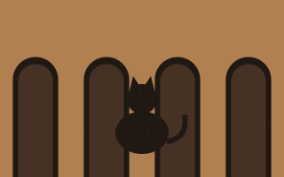
Le chat Elisseï de la rue Malaïa SadovaïaPetites sculptures en bronze posées sur les corniches.
Sous conditions -
#4
 #4Image
#4Image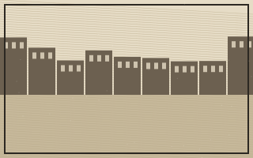
Photographies anciennes : canal Griboïedov, 1912Archive collaborative, usage non commercial.
Non commercial -
#5
#5
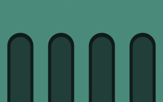
À qualifier -
#6
 #6Vidéo
#6Vidéo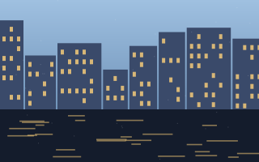
Visite des toits de Saint-Pétersbourg (vidéo)Promenade filmée, 17 min.
À qualifier -
#7
#7
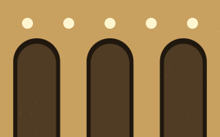
Stations de métro les plus profondes du monde : Admiralteïskaïa86 m sous la surface.
À qualifier -
#8
 #8Image
#8Image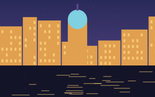
Sous conditions -
#9
#9Image
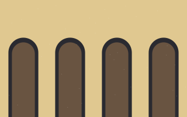
Île Nouvelle-Hollande : arche et bassinDomaine public.
Libre -
#10
#10ImageVignette indisponiblepastvu.comNon commercial
-
#11
#11Image
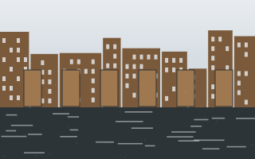
Sous conditions -
#12
#12culture.ruPas de vignetteMusée de la pharmacie du Dr Pel et sa tour aux griffons, l’une des adresses les plus mystérieuses de l’île Vassilievski, entourée de légendes alchimiques et de rumeurs d’expériences nocturnes
Pharmacie du XIXᵉ siècle, cour avec tour en brique.
À qualifier -
#13
 #13
#13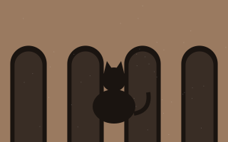
Ermitage : les chats gardiens du muséeUne soixantaine de chats vivent dans les sous-sols.
Sous conditions -
#14
#14Image
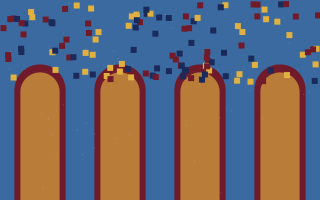
Libre -
#15
#15spb.ruPas de vignettePonts levants de la Neva : horaires 2026
Calendrier d’ouverture d’avril à novembre.
À qualifier -
#16
#16
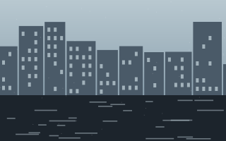
Sous conditions -
#17
#17Image
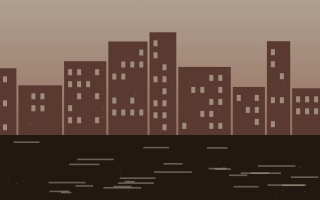
Ancienne usine Krasny Treugolnik, frichesCC BY-NC 2.0.
Non commercial -
#18
 #18
#18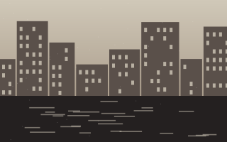
Le Loft Etagi : ancienne boulangerie reconvertieAvis et photos d’utilisateurs.
Payant -
#19
 #19Image
#19Image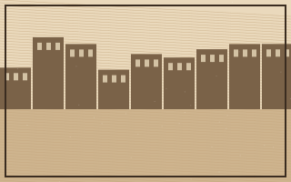
Cartes postales de Petrograd, 1915-1917Domaine public.
Libre -
#20
#20culture.ruPas de vignetteÀ qualifier
-
#21
#21Image
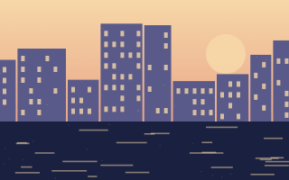
Nuits blanches sur le canal de la MoïkaCC BY-SA 4.0.
Sous conditions -
#22
#22Vidéo
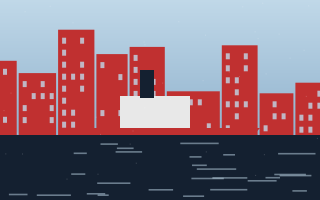
Brise-glaces musées : le KrassineVisite guidée, 23 min.
À qualifier